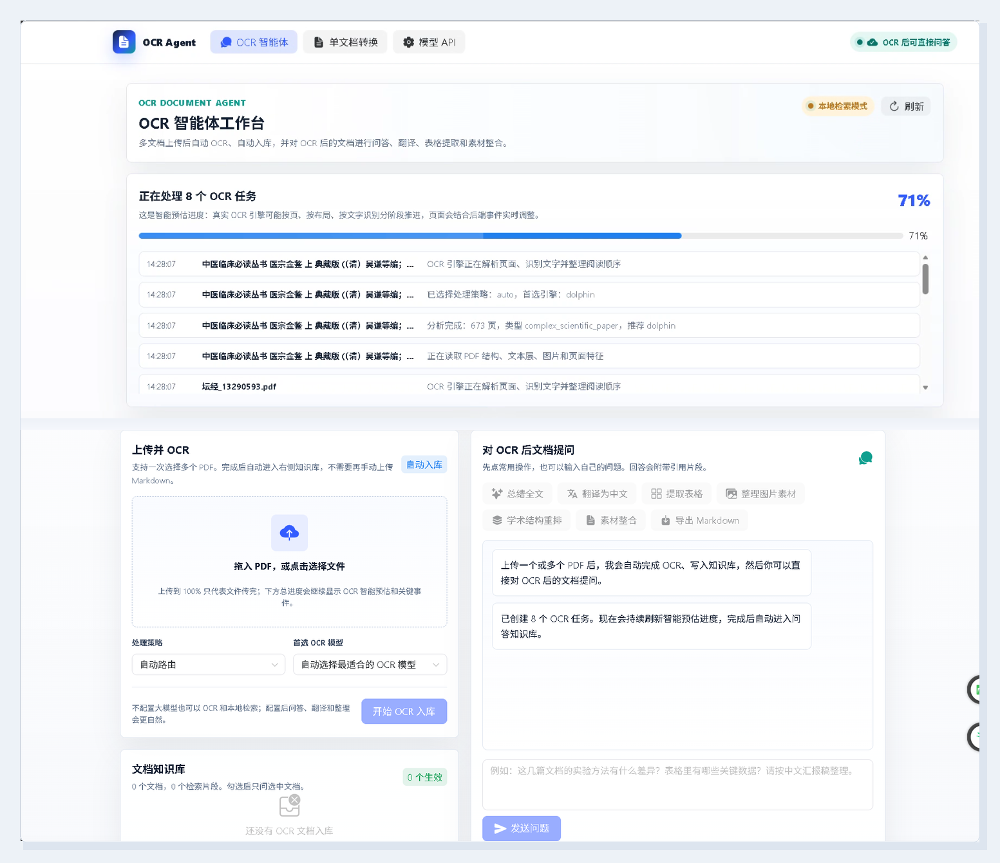

OCR Agent 智能文档解析与知识问答系统
一个面向科研论文、扫描 PDF、图文表格混排文档的 OCR 智能体工作台。系统将文档体检、模型路由、OCR 解析、版面修复、结果导出与 RAG 问答整合到同一套 Web UI 中，让用户能从“上传文档”直接走到“可阅读、可追问、可复用”的知识资产。

项目概览
本项目围绕“复杂文档自动解析与交互式知识利用”展开，目标不是做一个单点 OCR 工具，而是构建一套可扩展的 OCR 智能体：先判断文档类型，再选择合适模型，之后对输出进行纠错、排版与知识化处理，最终支持多文档问答、摘要、翻译、素材整理和导出。
复杂文档解析
支持 PDF 上传、文本层检测、扫描件判断、图像/表格/公式线索识别，并将科研论文等复杂版面路由到更合适的 OCR 引擎。
智能体式工作台
前端提供多文档队列、实时处理消息、智能预估进度、快捷操作标签和对话区，降低用户等待时的不确定感。
OCR 后知识问答
OCR 结果自动进入轻量 RAG 知识库，用户可基于已解析文档进行提问、翻译、总结、表格提取和学术结构整理。
技术架构
前端层
基于 Vue 3、Vite、Naive UI、Pinia、Axios 与图标组件构建，核心页面为 OCR 智能体工作台，承载上传、任务进度、文档列表、快捷动作、聊天问答与导出操作。
服务层
基于 FastAPI 与 Uvicorn 提供 OCR 任务 API、Provider 配置 API、RAG 文档与对话 API。长耗时 OCR 通过后台线程执行，避免阻塞轮询与页面反馈。
模型与解析层
集成 Dolphin-v2、MinerU、Marker、Docling、Surya、PaddleOCR、Nougat 等 OCR/文档解析引擎，并通过文档分析器为不同文件选择更合适的处理路线。
知识与导出层
OCR Markdown 自动切块入库，结合 OpenAI-compatible LLM Provider 或本地抽取式 fallback 完成问答。导出层支持 Markdown 与布局感知 HTML，保留页面图、图片和表格截图。
核心功能
| 功能模块 | 实现内容 | 用户价值 |
|---|---|---|
| 多文档 OCR | 支持多 PDF 上传、任务创建、进度轮询、结果预览与 Markdown 下载。 | 一次处理多个文档，适合批量论文、资料和扫描件整理。 |
| 自动模型路由 | 通过 PDF 结构分析判断是否为扫描件、复杂科研文档或普通文本 PDF。 | 减少用户手动选择模型的门槛，提升复杂文档解析命中率。 |
| 科研论文增强 | 引入 Dolphin-v2 处理图文表格混排、复杂版面和学术论文场景。 | 面向论文表格、图片、公式和多栏正文做更针对性的识别。 |
| 智能进度窗口 | 将上传进度与 OCR 处理进度分离，前端显示估算进度、当前阶段和动态消息。 | 用户能判断系统是否仍在运行，不再出现“上传完成但页面无反应”的体验断层。 |
| OCR 后 RAG | 解析结果自动进入轻量知识库，支持多文档检索、问答与常用操作标签。 | 从文档转换延伸到文档理解，能直接问“这篇论文讲了什么”。 |
| 版面感知 HTML 导出 | 通过脚本渲染页面图、抽取图片和表格区域，生成可阅读的学术风格 HTML。 | 提升 OCR 输出的展示质量，便于阅读、分享和二次编辑。 |
实现过程
阶段一：从 OCR 管线到可运行后端
搭建 FastAPI 服务，封装 OCRPipeline、PDFAnalyzer、模型引擎适配器、纠错器与质量评分器，使上传后的 PDF 能进入统一的分析、识别、修复和输出流程。
阶段二：构建 Web UI 与任务体验
使用 Vue 3 + Naive UI 设计前端工作台，包含上传区、任务队列、结果区、Provider 配置、RAG 对话和快捷动作。界面强调工作台效率，同时通过柔和色彩与动态状态降低等待焦虑。
阶段三：强化科研论文解析能力
针对论文图文表格混排效果不足的问题，引入 Dolphin-v2，并将其纳入模型路由。对复杂科研文档优先使用更适合版面解析的引擎，保留其他引擎作为不同文档类型的可选路径。
阶段四：打通 OCR 后 RAG 问答
OCR 结果自动切块进入内存知识库，前端从“提问”调整为“对 OCR 后文档提问”，并提供翻译为中文、提取表格、生成摘要、素材整合、导出等引导标签。
阶段五：处理反馈与体验修复
针对上传后无响应、进度显示不准确、轮询冻结、图片和表格位置还原不足等问题，增加智能进度估算、过程消息窗口、后台线程化 OCR 与布局感知 HTML 导出。
处理流程
支持模型与路由策略
| 模型/引擎 | 定位 | 典型适用场景 |
|---|---|---|
| Dolphin-v2 | 复杂科研论文与版面解析增强 | 多栏论文、图文表格混排、学术 PDF、复杂页面结构。 |
| MinerU | PDF 文档智能解析 | 论文、报告、带版面结构的 PDF 解析。 |
| Marker | PDF 转 Markdown | 需要 Markdown 输出与结构化文本的文档。 |
| Docling | 文档解析与结构转换 | 通用文档解析、表格和段落结构保留。 |
| Surya | OCR 与版面检测 | 扫描件、图片型 PDF、多语言 OCR 场景。 |
| PaddleOCR | 通用 OCR 基线 | 中文、英文和常规图片文字识别。 |
| Nougat | 学术论文文本化 | 论文内容转结构化文本，适合部分学术 PDF 场景。 |
RAG 智能体能力
多文档知识库
OCR 结果自动按段落与长度切块，保留文档来源，形成可检索的临时知识库。
LLM Provider 接入
支持 OpenAI-compatible API 配置、验证和调用，用于更自然的总结、翻译与问答。
无模型 fallback
即使未配置大模型，系统仍可基于本地检索片段提供抽取式回答，保证基础可用。
引导标签
内置翻译为中文、提取表格、总结要点、整理图片素材、生成学术提纲和导出文件等快捷入口。
过程可视化
前端动态展示处理阶段、关键事件、任务耗时与智能估算进度，避免用户盲等。
可扩展路由
OCR 引擎、纠错器、LLM Provider 与导出脚本都以模块方式组织，便于替换或新增能力。
遇到的问题与解决方案
| 问题 | 表现 | 解决方式 |
|---|---|---|
| 上传 100% 后页面像是无响应 | 浏览器上传完成不等于 OCR 完成，用户无法判断后端是否还在处理。 | 将上传进度与 OCR 处理进度拆开，增加智能预估进度和实时过程消息窗口。 |
| 长耗时 OCR 阻塞服务轮询 | 复杂 PDF 识别时 FastAPI 事件循环被占用，前端状态刷新变慢或卡住。 | 将 OCR 主流程放入后台线程执行，接口继续响应任务状态查询。 |
| 科研论文表格和图片还原不足 | 普通 OCR 容易丢失表格结构、图片位置和多栏阅读顺序。 | 引入 Dolphin-v2 并加入复杂论文路由，同时增强 HTML 导出脚本，保留页面图、表格截图与图片素材。 |
| OCR 输出排版不够稳定 | Markdown 段落、字号、行距、标题层级和学术阅读体验需要进一步统一。 | 增加 Markdown 清洗、学术风格 HTML 样式、正文排版约束和导出层布局修复。 |
| 大模型依赖不清晰 | 用户不确定 OCR 是否必须依赖 LLM。 | 明确 OCR 可独立运行，LLM 主要用于纠错增强与 RAG 问答；未配置模型时提供本地检索 fallback。 |
| 历史文件存在编码显示异常 | PowerShell 查看部分中文文档或源码时出现乱码。 | 最终交付文档使用 UTF-8 编码，并在新生成 HTML 中保持清晰中文元信息。 |
当前状态与后续优化
当前已具备
项目已形成可运行的 Web 工作台，具备多 PDF 上传、OCR 模型路由、智能进度展示、OCR 后 RAG 问答、OpenAI-compatible Provider 配置、Markdown/HTML 导出和科研论文解析增强能力。GitHub 仓库地址为 https://github.com/clementzhang29/ocr-agent-document-rag；仓库已创建，当前源码 push 因网络连接重置暂未完成。
建议继续增强
后续可引入持久化数据库、向量数据库、任务队列、WebSocket 事件流、用户空间、批量导出、OCR 质量评测集和更精细的版面坐标还原。
项目的核心价值在于把 OCR 从“单次识别工具”推进为“文档智能体”：它既能理解文档长什么样，也能把文档内容转化成可追问、可整理、可导出的知识工作流。
简历版项目介绍
独立设计并实现 OCR Agent 智能文档解析与知识问答系统，基于 FastAPI + Vue 3 构建 Web 工作台，集成 Dolphin-v2、MinerU、Marker、Docling、Surya、PaddleOCR、Nougat 等多 OCR/文档解析引擎，支持 PDF 文档自动体检、模型路由、复杂科研论文图文表格混排解析、Markdown/HTML 输出、任务进度可视化及 OCR 结果自动入库。系统内置轻量 RAG 检索与 OpenAI-compatible LLM Provider 接入能力，可对 OCR 后多文档进行问答、摘要、翻译、表格提取、图片素材整理和学术结构重排。项目中解决了大文件 OCR 阻塞 Web 轮询、上传进度与实际处理进度割裂、科研论文表格/图片排版还原不足等问题，通过后台线程化任务、智能预估进度、事件流反馈和布局感知 HTML 导出提升了可用性与交付质量。